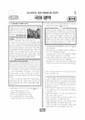

문제지

2022학년도 대학수학능력시험 · 2021년 11월 시행
2022학년도 수능 국어 화법과작문 1등급컷은 원점수 82점(비공식), 표준점수 최고점은 149점입니다.
원점수 1등급컷은 공식 발표값이 아니라 EBSi·입시기관 값입니다. 등급별 값은 등급컷 표, 출처 구분은 데이터 원칙에 있습니다.

시험지를 먼저 풀어 보세요. 등급컷·표준점수·난이도는 흐리게 가려 뒀어요.
| 등급 | 원점수 | 표준점수 | 백분위 | 누적 |
|---|---|---|---|---|
| 1 | 82 | 131 | 96 | 4.01% |
| 2 | 75 | 124 | 89 | 11.3% |
| 3 | 68 | 116 | 76 | 24.58% |
| 4 | 61 | 108 | 61 | 40.18% |
| 5 | 52 | 97 | 40 | 60.52% |
| 6 | 40 | 84 | 23 | 77.95% |
| 7 | 30 | 72 | 11 | 89.1% |
| 8 | 21 | 62 | 4 | 96.58% |
등급별 컷 · 원점수는 EBSi·입시기관 값(비공식) · 만점 100점
정답 변경 없음
원문 표에서 이 과목 문항을 찾지 못했어요
시험 전체 관련 보도 2건은 2022학년도 대학수학능력시험 회차 페이지에 모아 두었어요.
국어 영역 전체 응시자 기준입니다. 한국교육과정평가원이 교육부 보도자료로 공개한 표준점수 도수분포로 계산했습니다.
EBSi 응답자 기준으로 가장 많이 틀린 문항은 15번(2점)이고, 오답률은 77.4%입니다. 상위 15문항 중 2문항은 정답보다 한 오답을 고른 사람이 더 많았습니다(15번: 정답 ② 22.6%, ③ 41%). 오답률 50%를 넘은 문항은 14개입니다.
| 순위 | 문항 | 배점 | 오답률 | 정답 | 많이 고른 오답 |
|---|---|---|---|---|---|
| 1 | 15번 | 2점 | 77.4% | ② | ③ 41% |
| 2 | 40번 | 3점 | 75.7% | ③ | ④ 61.9% |
| 3 | 11번 | 2점 | 71.1% | ⑤ | ② 23.1% |
| 4 | 13번 | 3점 | 70.9% | ④ | ② 23.7% |
| 5 | 16번 | 3점 | 68.5% | ④ | ③ 24.5% |
| 6 | 8번 | 3점 | 68.2% | ② | ④ 30.6% |
| 7 | 4번 | 2점 | 61% | ① | ③ 28.1% |
| 8 | 12번 | 2점 | 60.4% | ⑤ | ④ 19.4% |
| 9 | 45번 | 3점 | 59.1% | ③ | ② 27% |
| 10 | 23번 | 3점 | 58.5% | ④ | ⑤ 34.3% |
| 11 | 7번 | 2점 | 54.7% | ③ | ④ 17.7% |
| 12 | 5번 | 2점 | 52.9% | ③ | ① 17.2% |
| 13 | 22번 | 2점 | 52.3% | ① | ④ 24.5% |
| 14 | 39번 | 2점 | 51.8% | ① | ③ 24.9% |
| 15 | 10번 | 2점 | 47.7% | ② | ⑤ 17.3% |
EBSi 가채점 응답자 기준 · 전 문항 중 오답률 상위 15문항
출처: EBSi 역대 등급컷·오답률 공개 화면. 가채점에 참여한 EBSi 이용자 응답이라 전체 응시자 정답률과는 다를 수 있습니다.
발행 기관: 한국교육과정평가원(KICE). 파일 위치: 이 사이트가 보관한 사본. 저작권은 발행 기관에 있습니다. 원본과 다르거나 게시 중단이 필요하면 연락처로 알려 주세요. 등급컷 출처 구분은 데이터 원칙에서 설명합니다.
막대 색은 역대 대비 난이도 · 진한 막대가 이 시험 · 막대를 누르면 그 회차로 이동
| 회차 | 1등급컷 | 표점 최고 | 1등급 표점 | 난이도 |
|---|---|---|---|---|
| 수능2022학년도이 시험 | 82 | 149 | 131 | 매우 어려움 |
| 9모2022학년도 | 100 | 127 | 127 | 매우 쉬움 |
| 6모2022학년도 | 90 | 146 | 132 | 어려움 |
공통과목 독서는 제2차 세계 대전 당시 폐허가 된 런던의 서가 앞에 선 사람들의 사진으로 독서의 의미를 다룬 독서론(1~3번), (가) 정립-반정립-종합의 변증법으로 예술·종교·철학을 체계화한 헤겔의 미학과 (나) 그 체계가 변증법의 원칙에 맞는지 비판적으로 검토한 글을 묶은 주제 통합형 인문 지문(4~9번), 금 본위제와 브레턴우즈 체제, 트리핀 딜레마 등 기축 통화와 환율을 다룬 경제 지문(10~13번), 광각 카메라 영상을 보정해 차량 주위를 위에서 내려다본 영상을 만드는 장치를 다룬 기술 지문(14~17번)으로 구성되었습니다.
가장 많이 틀린 15번(2점, 77.4%)은 광각 카메라 영상의 왜곡 보정과 시점 변환 과정을 이해하는 문항으로, 응답의 41.0%가 한 오답을 골랐습니다. 경제 지문의 11번(2점, 71.1%)과 13번(3점, 70.9%)은 닉슨 쇼크 이후의 달러화 평가 절하와 석유 가격 급등을 다룬 <보기>를 판단하는 문항, 12번(60.4%)은 국가 수에 따른 환율의 가짓수를 따지는 문항이었고, 인문 지문의 8번(3점, 68.2%)은 헤겔과 (나)의 글쓴이가 괴테·실러의 작품을 두고 나누는 가상 대화를 완성하는 문항이었습니다.
문학은 이육사 「초가」·김관식 「거산호 2」와 이옥의 산문 「담초」를 묶은 갈래 복합(18~23번), 윤흥길의 현대소설 「매우 잘생긴 우산 하나」(24~27번), 작자 미상의 고전소설 「박태보전」(28~31번), 정훈 「탄궁가」와 위백규 「농가」를 묶은 고전시가(32~34번)로 구성되었습니다.
23번(3점, 58.5%)은 대상을 그와 연관된 다른 사물이나 속성으로 대신해 나타내는 표현 방법을 다룬 <보기>로 세 작품을 감상하는 문항, 22번(52.3%)도 같은 갈래 복합에서 나왔습니다. 문학은 독서보다는 덜 어려웠다는 평가였습니다.
화법과 작문은 17세기 조리서 『음식디미방』에 실린 음식을 소개하는 학생의 발표(35~37번), 토론 한마당 예선 방식 개선을 요구하며 학생회 누리집 게시판에 올린 글과 이를 읽은 학생회 학생들의 대화(38~42번), '건강 상식' 잡지 편집장의 요청에 따라 기자가 쓴 악기 연주자의 근골격계 질환 관련 초고(43~45번)로 구성되었습니다.
선택과목에서 가장 많이 틀린 40번(3점, 75.7%)은 학생회 대화에 참여한 '학생1'의 발화를 게시판 글과 연결해 판단하는 문항으로, 응답의 61.9%가 4번을 골라 공통과목 15번에 버금가는 오답률을 보였습니다. 추가 자료의 활용 방안을 묻는 45번(3점, 59.1%)과 평가 기준으로 게시판 글을 평가하는 39번(51.8%)도 오답률이 50%를 넘었습니다.
화법과 작문 응시자는 공통 독서뿐 아니라 선택 40번(75.7%)에서도 크게 흔들렸습니다. 대화 속 발화를 게시판 글과 연결하는 문항은 발화마다 게시판 글의 어느 문장을 가리키는지 선을 그어 확인하는 연습이 필요하고, 독서는 15번처럼 처리 단계를 순서도로 정리하는 연습이 도움이 됩니다.